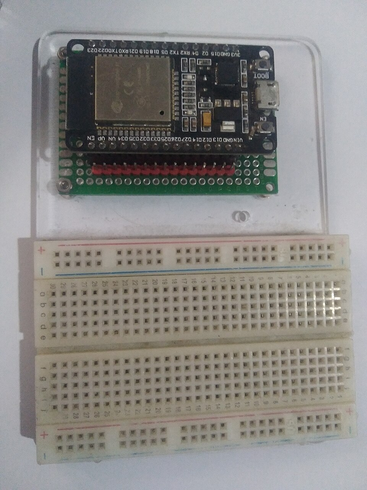
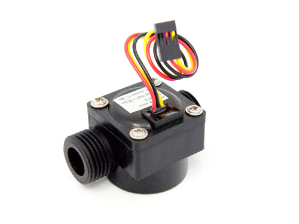
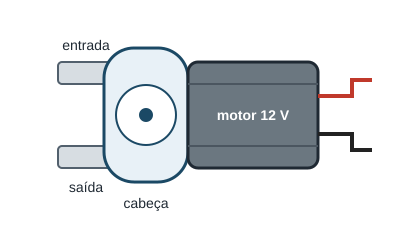
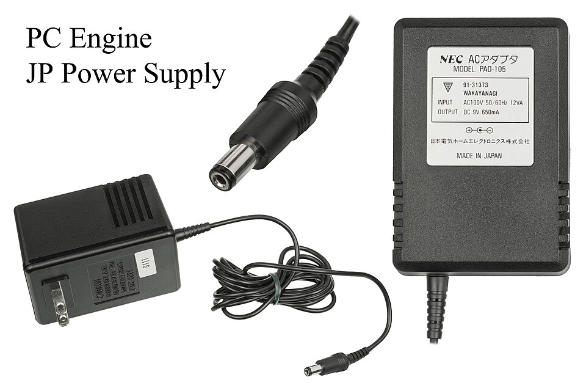
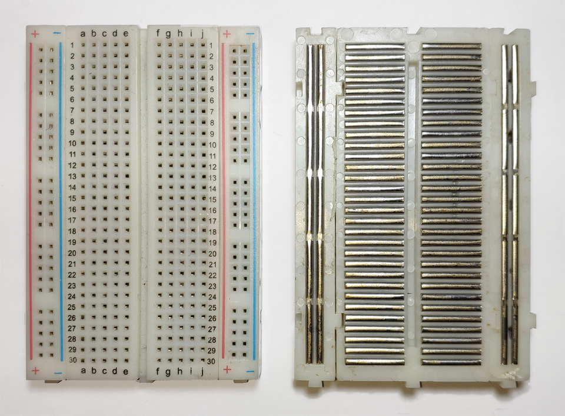
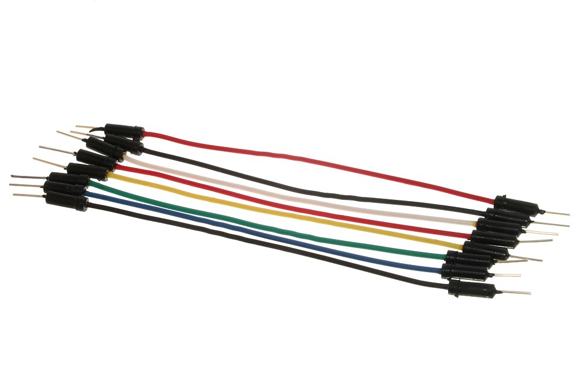
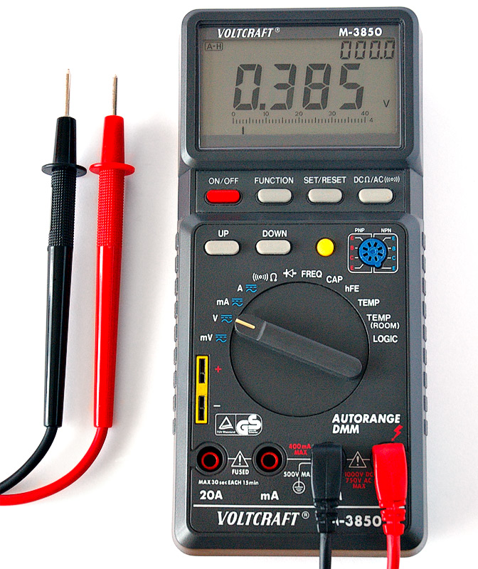
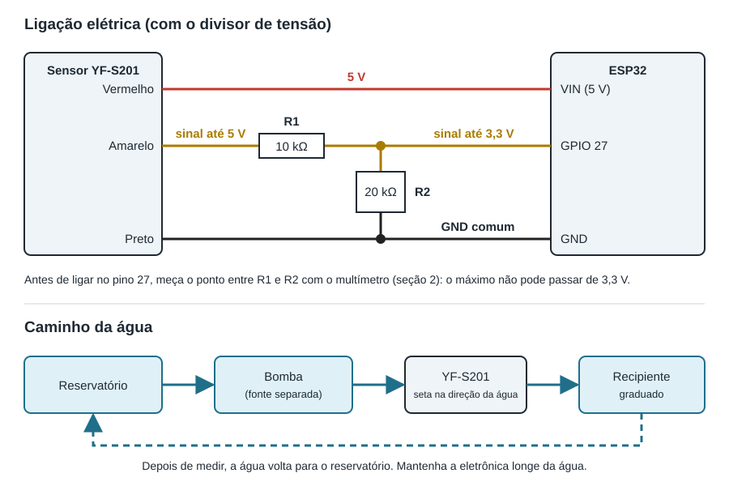

Especificação técnica das peças, do circuito e da calibração: do simulador Wokwi à medição de água de verdade.
Versão 1.0 · 2 de novembro de 2026Issue #14
Neste documento
Sumário
Mostra as peças, a ligação elétrica e a calibração necessárias para trocar o simulador Wokwi por um sensor de vazão real.
Peçaslista, preços, fotos e especificações
Ligação elétricacircuito e conferência com o multímetro
Medição e calibraçãode pulsos para litros
Do Wokwi para a bancadao que muda no sketch
Fontesdados e créditos das imagens
Situação: proposta ainda não montada. Os valores vêm das fichas técnicas e de contas, sem medição em bancada. Confirme na ficha do modelo comprado e meça antes de ligar.
Seção 1
Peças
Preços de anúncios no Mercado Livre em 02/11/2026, em período de promoções e sem somar frete. Podem mudar; confirme na hora da compra.
Peça
Qtde
Função
Preço
ESP32 DevKit com ESP-WROOM-32
1
lê o sensor e envia o lote pela API
R$ 34 a 49
Sensor de vazão YF-S201 (rosca de 1/2")
1
mede a água
R$ 28 a 45
Mini bomba de diafragma R385, 12 V
1
faz a água circular
R$ 34 a 59
Fonte 12 V, 1 A
1
alimenta só a bomba
R$ 27 a 44
Protoboard de 830 pontos com jumpers
1
ligações
R$ 25 a 37
Resistores de 10 kΩ (3) e 220 Ω (1), botão e LED
1 kit
divisor de tensão, início e fim do lote, aviso de lote em andamento
R$ 5 a 10 (estimado)
Mangueira, adaptadores de 1/2" e abraçadeiras
1 kit
liga a bomba ao sensor
R$ 20 a 40 (estimado)
Reservatório e recipiente graduado
1 de cada
guardar a água e conferir o volume
reaproveitável
Multímetro
1
conferir as tensões antes de ligar
emprestado
Total, sem frete e sem contar o que a equipe já tiver
cerca de R$ 175 a 285
Seção 1 · continuação
Como são as peças
Fotos ilustrativas: a aparência varia conforme o fabricante. Créditos na seção 5.

ESP32 DevKit
O cérebro da bancada: conta os pulsos e envia o lote pelo Wi-Fi.

Sensor de vazão de 1/2"
Fica no caminho da água e gera pulsos conforme ela passa. Foto de um modelo do mesmo tipo do YF-S201.

Mini bomba R385
Faz a água circular. Desenho ilustrativo, feito para este documento.

Fonte 12 V, 1 A
Alimenta só a bomba. Foto de um adaptador parecido; o modelo comprado precisa ser de 12 V.

Protoboard
Permite ligar as peças sem solda.

Jumpers
Fios com pontas prontas para as ligações na protoboard.
Resistores
Formam o divisor de tensão que protege o pino do ESP32.

Multímetro
Confere as tensões antes de ligar o sensor no ESP32.
Seção 1 · continuação
Especificações do sensor
Item
Valor
Alimentação
5 a 18 V (mínimo testado: 4,5 V)
Consumo
até 15 mA em 5 V
Faixa de vazão
1 a 30 L/min
Saída
pulsos de 5 V (TTL), com ciclo de 50% ± 10%
Pulsos por litro
cerca de 450
Precisão
cerca de ±10% sem calibrar
Fios
vermelho (alimentação), preto (GND), amarelo (sinal)
As fichas consultadas divergem em alguns valores. Aqui ficou o mais conservador.
Vazão da bomba
A bomba R385 é anunciada com cerca de 1,5 a 2 L/min, em 12 V e 0,5 a 0,7 A com carga. É pouco acima do mínimo do sensor (1 L/min), e as mangueiras e adaptadores podem reduzir a vazão. Antes de comprar o restante, teste a vazão com um recipiente graduado. Se ficar abaixo de 1 L/min, deixe a água cair por gravidade de um reservatório mais alto ou use uma bomba maior.
Seção 2
Ligação elétrica

Fio do sensor
Liga em
Observação
Vermelho
VIN (5 V) do ESP32
com o ESP32 alimentado pela USB
Preto
GND do ESP32
mesmo GND do sensor e do ESP32
Amarelo (sinal)
R1 de 10 kΩ, depois GPIO 27
R2 de 20 kΩ vai do GPIO 27 ao GND
O pino 27 é o que o iot/sketch.ino já usa para contar os pulsos. Botão e LED continuam nos pinos 4 e 2. R2 pode ser feito com dois resistores de 10 kΩ em série. A bomba fica ligada só na fonte de 12 V, sem nenhum fio em comum com o ESP32.
Seção 2 · continuação
Por que o divisor de tensão
O sinal do sensor é de 5 V. Pela ficha do ESP32, o nível alto aceito no pino vai de 2,475 V a cerca de 3,6 V (0,75 x VDD a VDD + 0,3 V, com VDD de 3,3 V). Ligar o sinal direto pode queimar a placa. O divisor reduz a tensão para dentro dessa faixa:
V no pino = 5 V x R2 / (R1 + R2) = 5 V x 20 kΩ / (10 kΩ + 20 kΩ) = 3,33 V
Conferência antes de ligar no ESP32
As fichas consultadas não informam como é o circuito interno da saída, e isso pode mudar entre fabricantes. Por isso, meça primeiro, com o divisor montado, o sensor ligado em 5 V e o fio ainda solto do pino 27. Gire a hélice devagar, soprando ou com água, e meça o ponto entre R1 e R2 em relação ao GND:
O multímetro mostra
O que fazer
Alterna entre perto de 0 V e 2,5 a 3,3 V
Pode ligar no pino 27
Acima de 3,3 V
Não ligue. Confira os valores e a posição de R1 e R2
Fica sempre perto de 0 V ou abaixo de 2,5 V
A saída provavelmente precisa de pull-up. Tire R1 e R2, ligue o sinal no pino 27 com um resistor de 10 kΩ do sinal para o 3,3 V (nunca para o 5 V) e meça de novo
Se o sinal ficar instável, com contagem a mais sem água passando, use fios curtos e afaste os fios do sinal dos da bomba.
Segurança: mantenha a eletrônica longe da água, não alimente a bomba pelo ESP32 e só mexa nas ligações com tudo desligado.
Seção 3
Medição e calibração
O sensor gera pulsos conforme a hélice gira. A especificação é:
frequência (Hz) = 7,5 x vazão (L/min)
vazão (L/min) = frequência (Hz) / 7,5
pulsos por litro = 7,5 x 60 = 450
litros do lote = total de pulsos / PULSOS_POR_LITRO
Vazão
Frequência
1 L/min (mínimo do sensor)
7,5 Hz
1,5 a 2 L/min (bomba R385)
11 a 15 Hz
30 L/min (máximo do sensor)
225 Hz
Como calibrar
A contagem também muda com a vazão, a pressão e a posição do sensor. Calibre com a montagem final:
Encha um recipiente graduado com um volume conhecido, de pelo menos 5 L, passando pelo sensor. Com a bomba R385, isso leva cerca de 3 minutos.
Anote o Acumulado que o sketch mostra no monitor serial.
Calcule e repita pelo menos 3 vezes, usando a média:
PULSOS_POR_LITRO novo = PULSOS_POR_LITRO atual x litros mostrados / litros reais
Exemplo: o sketch com 450 mostrou 5,20 L e o recipiente marcou 5,00 L. O novo valor é 450 x 5,20 / 5,00 = 468.
Cuidado: ao encerrar um lote, o sketch envia o lote para a API, e lotes não podem ser apagados. Faça a calibração com um banco temporário, nunca com o banco oficial aguas.
Seção 4
Do Wokwi para a bancada
Onde
Mudança
Motivo
Montagem
Tirar o fio entre os pinos 25 e 27 e o potenciômetro
os pulsos passam a vir do sensor
loop() e ajustarGerador()
Retirar o gerador de pulsos
ele só existe para simular o sensor
Mensagem Vazão: ... no serial
Calcular a vazão pelos pulsos do último segundo
hoje ela usa freqAtual, que vem do gerador simulado
WIFI_SSID e WIFI_SENHA
Usar a rede do local
o valor atual é a rede do simulador
WiFi.begin(WIFI_SSID, WIFI_SENHA, 6)
Tirar o 6
ele fixa o canal usado no Wokwi, e a rede real pode estar em outro
API_URL
Usar o endereço da API publicada
a comunicação segura é tratada na issue #13
PULSOS_POR_LITRO
Usar o valor calibrado
seção 3
PROCESSO_NOME e PECAS
Usar um processo de bancada
ver abaixo
Meta da demonstração: uma bancada mede poucos litros, enquanto as metas reais são de lavanderia. Se usar um processo real, o desvio sai muito abaixo da meta. Para demonstrar, cadastre um processo próprio, por exemplo com meta de 5 L por lote. Assim, medir mais de 5 L em 3 lotes seguidos abre o alerta.